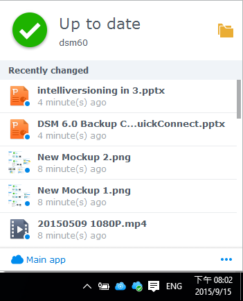

總覽
Synology NAS 的 Cloud Station 為一個同步檔案的應用程式，讓您可以在 Synology NAS 及其他電腦或行動裝置 (須搭配 DS cloud) 之間輕鬆地同步檔案。 在您的 Synology NAS 上安裝 Cloud Station Server 並在電腦上安裝 Cloud Station Drive 來同步您電腦及 Synology NAS 上的檔案。
在 Synology NAS 與您的電腦之間建立連線
- 前往套件中心來尋找 Cloud Station Server 並點一下安裝。
- 啟動 Cloud Station Server
- 在總覽頁面點一下 Cloud Station Drive 下方的按鈕以為您的作業系統安裝 Cloud Station Drive。 (亦可前往 Synology 下載中心進行下載。)
- 在電腦上開啟安裝程式，並依照指示。
- 安裝完成後，在電腦上執行 Cloud Station。 按一下立即開始。
- 輸入您的電腦名稱、執行 Cloud Station 的 Synology NAS 位址 (或 QuickConnect ID)、使用者名稱及密碼。 您可以點一下右邊的搜尋圖示來尋找 LAN 裡的 IP。 按一下下一步。
- 點一下編輯圖示來選擇您要同步的資料夾。 點一下進階設定來調整同步設定。
- 取消勾選您不想同步的字資料夾。
- 輸入最大檔案同步大小及將您不要同步的檔案或檔案名稱加入黑名單。
- 選擇您是否要雙向同步或只從 Synology NAS 下載資料。
- 按一下完成來完成設定。
- 您可以在您的系統匣找到 Cloud Station Drive 圖示。
- 雙點擊 Cloud Station Drive 圖示開啟系統匣選單。 您可以在這裡檢視檔案的進度及狀態。 您可以在這裡檢視檔案的進度及狀態。 點一下主應用程式來開啟 Cloud Station Drive。 
- 開啟後 Cloud Station 將會顯示使用小提示。 點一下右方的箭頭來參閱更多小提示，或點一下線上使用教學 以取得更多資訊。 若您不需要小提示，點一下不要再顯示此訊息 。
- 現在您就能管理 Cloud Station Drive 上的同步任務 。


若要下載同步檔案的先前版本：
- 點一下 Cloud Station Drive 圖示並點一下資料夾圖示。
- 以滑鼠右鍵點按檔案，然後選擇 Synology Cloud Station > 瀏覽先前的版本。
- 選擇您欲下載的版本，然後按一下下載圖示。


從 Cloud Station Server 下載或還原同步檔案的先前班本
- 前往 Cloud Station > 版本歷史並選擇您要還原的資料夾。
- 選擇您想要取回的檔案並點一下動作 > 瀏覽先前的版本。
- 選擇您想要下載的檔案版本並點一下下載。 如果您確定想要還原您選擇的版本，點一下回復來覆寫現有的版本。


重要事項
- 永遠保存歷史阪本以免不小心刪除或覆寫了檔案。
- 您可以設定重新建立連結時讓系統從 NAS 同步在本地端刪除的檔案到 PC ，或一起刪除 NAS 上的檔案。此功能可以在設定裡啟動。
同步資料到行動裝置
你可從 Apple App Store 及 Google Play Store 免費下載 DS cloud。 您也可以掃瞄下方 QR code 直接進行下載。